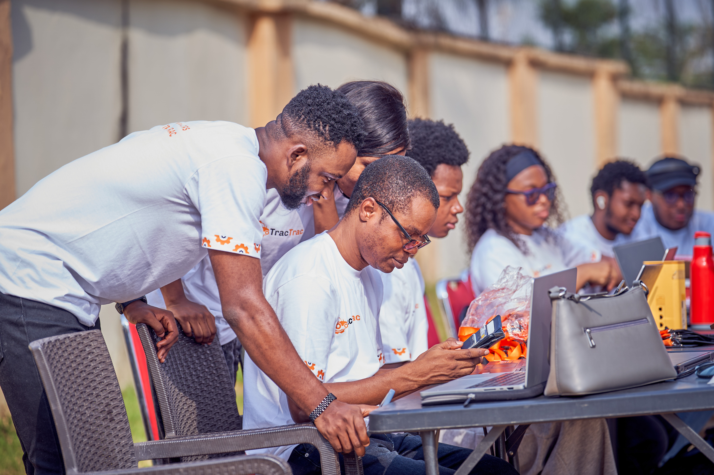

How It Works
Product Design
The TracTrac MSP Model is built on four pillars.
Recruitment and Mobilisation
Identification and screening of suitable youth and women across partner states.
Training Delivery
A hands-on, 3–4 week hybrid program combining classroom instruction, field practicals, and digital learning modules.
Certification and Onboarding
Graduates receive official TracTrac MSP certification and are integrated into TracTracPlus and the operational digital platform for job placement, bookings, and service monitoring.
Post-Training Support
Continuous mentorship, refresher courses, and integration into cooperatives and private service delivery networks.
Impact
TracTracMSL is Building the Workforce Powering Mechanisation
The TRAxCelerate program builds skilled service providers to drive mechanisation, create jobs, and strengthen MSMEs across Nigeria.
2,000
MSP Training & Certification
Train and certify 2,000 service providers.
Service Efficiency
Improve mechanisation reach and performance.
Ecosystem Growth
Strengthen local systems and MSME value chains.
Youth Empowerment
Promote jobs, entrepreneurship, and digital skills.
